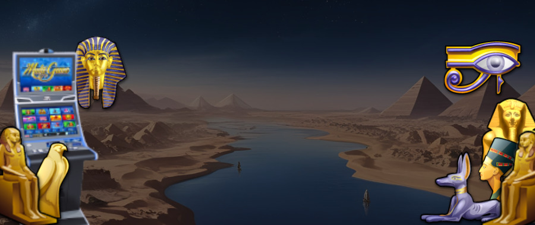
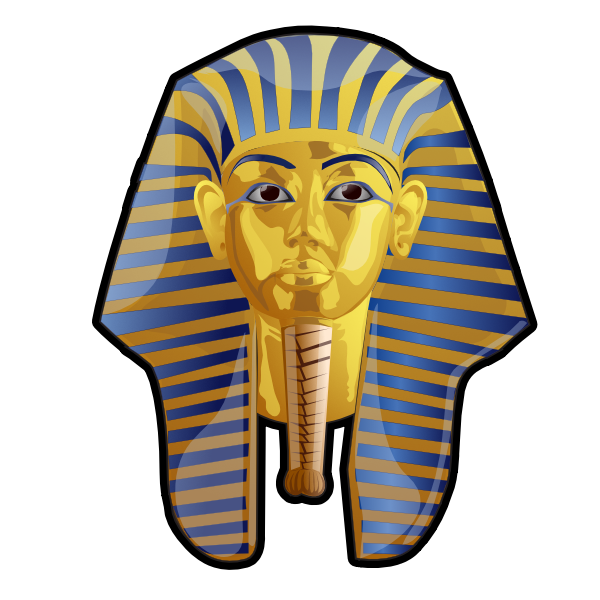
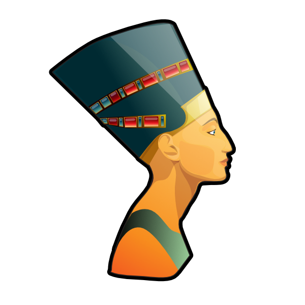
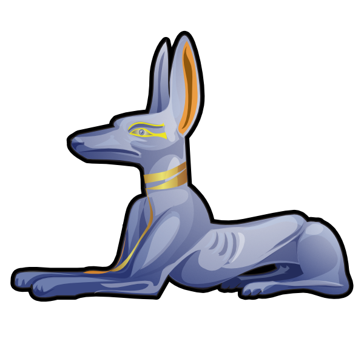
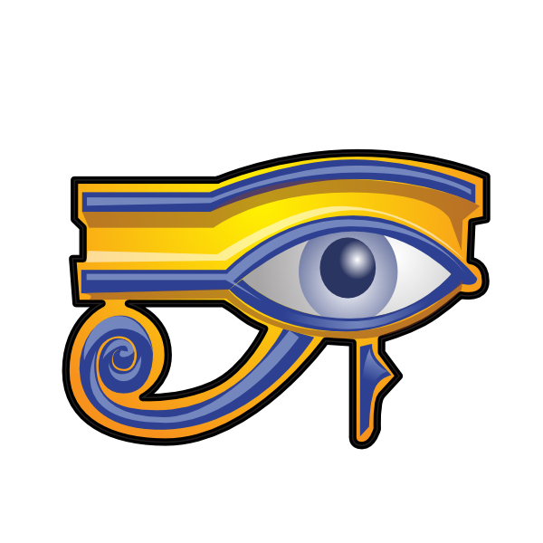
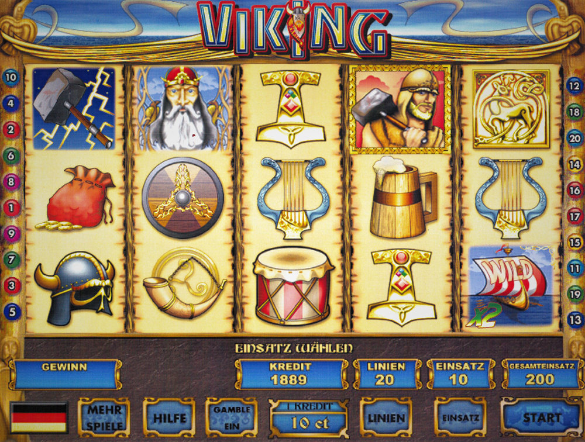
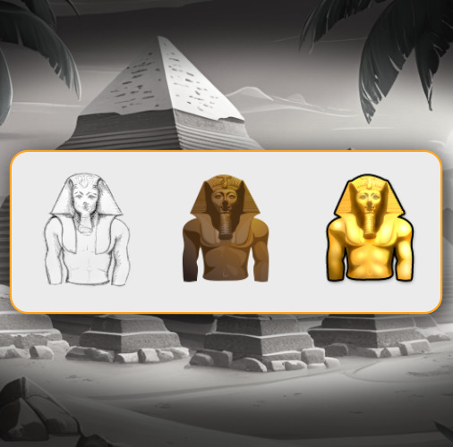

Amatic Industries
Bridging cultural research with digital art: Creating iconic game worlds through high-fidelity character design and style adaptation.
The Pharao
Digital
Archeology
Designing the Pharao series required cultural research. From Tutankhamun’s mask to the Eye of Ra, every symbol was crafted with historical depth and premium aesthetic.
Technical Approach: I developed these characters using a hybrid workflow: precise Vector foundations refined with pixel-level texturing to achieve a rich, golden finish.




Style Adaptability
A senior designer’s greatest asset is the ability to speak different visual languages. From Nordic mythology to the playful world of a cartoon zoo.


// Original Pencil Concept for the Pharaoh
The Sketch
is the Soul
Even in a digital-first industry, I believe in the power of the hand-drawn concept. The Pharao’s character lifecycle began with detailed pencil studies.
"My goal was to create characters that players don't just see, but recognize as symbols of power and mystery. The vector foundation allows for infinite scalability, while the pixel-finishing brings the gold to life."